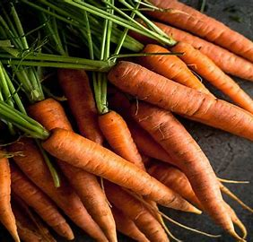
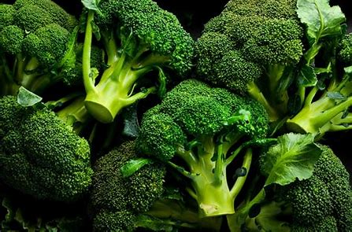
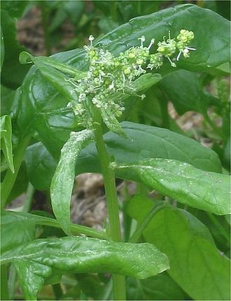

Carrots are a root vegetable that are often claimed to be the perfect health food. They are highly nutritious and beneficial for health.
Price: $2.00 per lb

Broccoli is a cruciferous vegetable that is a nutritional powerhouse full of vitamins, minerals, fiber, and antioxidants.
Price: $1.50 per lb

Spinach is a leafy green vegetable that is rich in iron, vitamins, and minerals. It is known for its numerous health benefits.
Price: $3.00 per lb